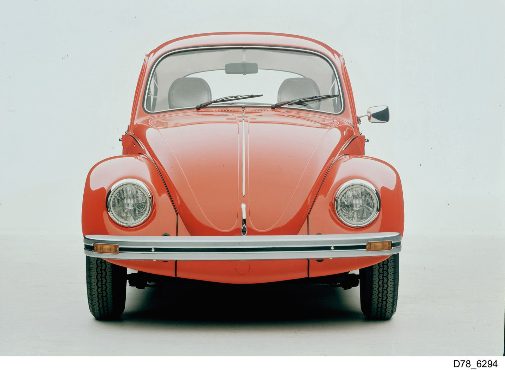

Perché un'auto entra nell'immaginario collettivo? Nel caso del New Beetle la risposta è duplice, e si gioca su due piani generazionali diversi che si intrecciano tra loro. Da un lato c'è il pubblico più giovane, quello che ha conosciuto il New Beetle come auto "del momento" tra la fine degli anni '90 e la fine degli anni 2000, complice una presenza fittissima sugli schermi di cinema e televisione. Dall'altro c'è un pubblico più adulto, quello che nel New Beetle non ha semplicemente visto un'auto alla moda, ma un ponte diretto verso il proprio passato: chi negli anni '60 e '70 aveva avuto (o aveva visto guidare da un genitore, da un nonno) il Maggiolino originale, si è ritrovato davanti a un'auto capace di restituire, quasi intatte, le stesse sensazioni visive ed emotive di decenni prima. Questo doppio registro — nostalgia per chi ricordava, novità per chi scopriva — è probabilmente la vera chiave del successo culturale del New Beetle, ed è anche il motivo per cui Volkswagen scelse consapevolmente questa strategia già in fase di progettazione, come racconta la sezione dedicata alla storia del modello.
La leva della nostalgia
Il New Beetle nasce infatti come un progetto di design studiato a tavolino per attivare un meccanismo psicologico preciso: quello del "retro-futurismo", cioè la capacità di un oggetto nuovo di richiamare alla mente ricordi ed emozioni legate al passato, pur restando percepito come moderno e attuale. Per chi, negli Stati Uniti degli anni 2000, aveva memoria diretta o familiare del Maggiolino — magari attraverso i racconti dei genitori sulla mitica campagna "Think Small" degli anni '60, o semplicemente per aver visto un Maggiolino parcheggiato fuori casa da bambino — il New Beetle non era soltanto un'utilitaria dal design simpatico: era un oggetto capace di riportare alla memoria un'epoca, una spensieratezza, un modo di vivere l'automobile lontano dalla logica delle grandi berline o dei SUV. Non stupisce quindi che, parallelamente al suo successo tra il pubblico più giovane, il New Beetle abbia conquistato anche una fetta di acquirenti più maturi, spesso ex proprietari del Maggiolino originale, desiderosi di ritrovare in una vettura moderna e sicura lo stesso spirito di un'auto che avevano amato decenni prima.
